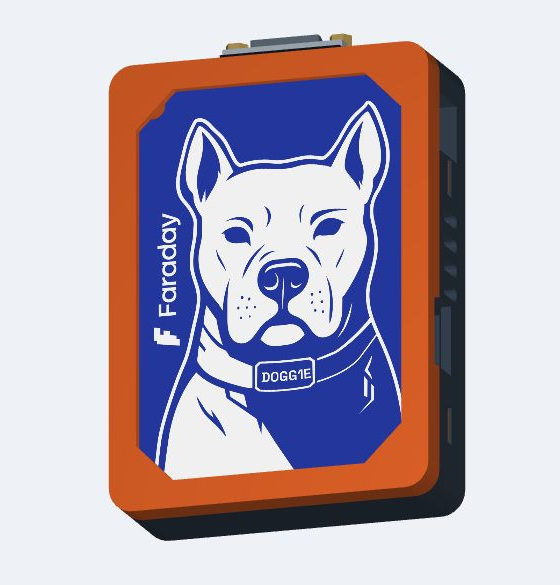
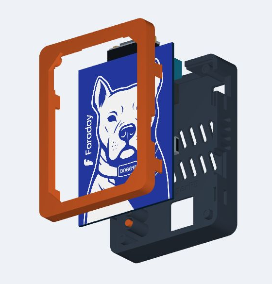
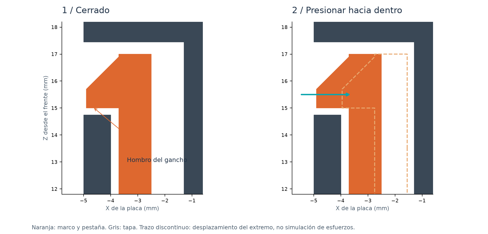

A / PULSADORES CAUTIVOS
Todo al alcance.
Marco, tapa y dos varillas impresas para accionar BOOT y RESET. Los pulsadores entran desde el interior de la tapa.
EvilDoggie · Primera edición comunitaria
Doggie House es una carcasa para cuidar EvilDoggie sin esconder lo que lo hace especial. Del taller a tu impresora, para toda la comunidad.
Modelado en Kraken Tres D · Archivos abiertos · MIT

01 / La historia
En la EKOparty 2026, en Argentina, los amigos de Faraday nos regalaron un EvilDoggie. Al regresar a Guatemala, nos quedó una idea: un hardware tan bonito debía estar protegido.
Lo llevamos al taller de Kraken Tres D y modelamos una casita que cuidara la placa, dejara ver al perro y mantuviera las conexiones al alcance.
Ahora compartimos los archivos para que cualquiera pueda imprimirla, ensamblarla y hacerla suya. Gracias a los amigos de Faraday por el regalo y a la comunidad por seguir construyendo y compartiendo.
02 / Conocé las piezas
Girá el modelo, acercá los detalles o elegí el despiece para ver cómo se encuentran el marco, la placa y la tapa.
03 / A la impresora
Una placa, dos opciones de tapa. Descargá un conjunto e importá las piezas en milímetros a escala 100 %.
A / PULSADORES CAUTIVOS
Marco, tapa y dos varillas impresas para accionar BOOT y RESET. Los pulsadores entran desde el interior de la tapa.
B / ACCESO DIRECTO
El mismo marco, con una tapa que permite alcanzar los botones de la PCB. No necesita las varillas impresas.
Antes del conjunto completo: probá el cierre con las muestras 08 + 09 y la abertura USB con 10 + 11.
Punto de partida: PETG sin fibras · boquilla 0,4 mm · capa 0,20 mm · 4 paredes · relleno 20 %. Marco y tapa con su cara exterior sobre la cama; pulsadores de pie con brim. Elegí el perfil real de tu impresora y filamento.
Los 3MF contienen geometría orientada, sin perfil de impresora ni G-code. Carcasa: 80 × 110 × 27,8 mm. PCB de referencia: 70 × 100 × 2 mm.
04 / El ensamblaje

Desconectá la placa. Retirá soportes y rebabas de puertos, canales y pestañas. Probá el cierre con las muestras de PETG.
La ventana es opcional. Para colocarla, cortá PET o policarbonato de 1 mm con la plantilla 1:1. Verificá su regla de 50 mm y fijala al reborde con cinta fina, lejos de los apoyos.
Apoyá el marco boca abajo sobre una superficie blanda. Perro hacia la ventana y DB9 hacia el extremo superior. Bajá la PCB sobre los cuatro pines; todas las esquinas deben apoyar sin forzar.
Con tapa 02, introducí las varillas desde dentro, extremo estrecho hacia fuera y retención hacia dentro. Comprobá que se deslicen libres. Con tapa 04, omití este paso.
Centrá los puertos y alineá la junta y los cuatro canales. Presioná de forma gradual junto a los bordes hasta encajar los ganchos. No presionés componentes ni forcés una pestaña.
Verificá que USB y DB9 entren completamente sin mover la PCB, que GOOD / EVIL recorra ambos extremos y que BOOT / RESET regresen libres. La placa y la ventana no deben tocar ni deformar componentes.
Desconectá los cables. Presioná hacia dentro los dos ganchos de un lateral a través de sus ventanas, con la uña o una punta plástica. Separá ligeramente ese borde, liberá el otro lado y levantá la tapa recta. Practicá el movimiento con las muestras del cierre. Usá los bordes de la carcasa para sujetarla y evitá hacer palanca con los conectores.

Edición comunitaria 1.0.0. Se comparten sin cambios los STL y 3MF del taller, cuya revisión interna es 2.0.0-rc1. La geometría tiene comprobaciones digitales; el ajuste USB, el cierre PETG y los controles requieren comprobarse en la impresión y PCB reales. Las fotografías del prototipo documentan una etapa anterior. No se han realizado ensayos de impacto, temperatura ni fatiga.
05 / Para la comunidad
¿Ya imprimiste la tuya? Compartí una foto, contá qué material usaste y cómo quedó el ajuste. Tus pruebas y mejoras ayudan a que más EvilDoggies encuentren casa.
Compartir mi impresión ↗ · Aportar mejoras ↗